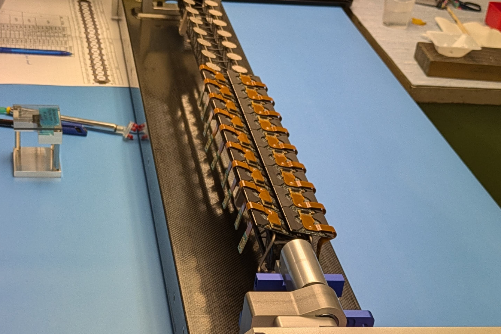

| Figure 1: ATLAS detector (from ATLAS experiment webpage). |
I am deeply passionate about understanding the properties of elementary particles, particularly the Higgs boson. As part of my research, I am a collaborator on the ATLAS experiment, one of the two flagship experiments at the Large Hadron Collider (LHC). Alongside its competitor, the CMS experiment, ATLAS represents the world's highest-energy particle physics experiment, utilising proton-proton collisions provided by the LHC.
The LHC is a massive proton accelerator located 100 meters underground near Geneva, Switzerland. With a circumference of nearly 27 km, it currently achieves proton-proton collision energies of 13 TeV, with prospects to reach 14 TeV in the coming years. The ATLAS detector, depicted in Figure 1, is stationed at one of the collision points. It is a cylindrical structure 25 meters in diameter and 44 meters long, incorporating six distinct particle sub-detectors. Its advanced and precise design enables the efficient detection of minute signals from high-energy particles such as electrons, muons, pions, protons, and neutrons, either produced directly in proton collisions or resulting from the decay of massive particles like top quarks, the Higgs boson, or potentially new, undiscovered elementary particles. In 2012, the ATLAS and CMS experiments jointly announced the discovery of the Higgs boson, the final missing piece of the Standard Model of elementary particle physics.
The sheer scale and complexity of the ATLAS experiment make it impossible for any individual or small group to handle the operation and maintenance of its detector system or the massive distributed computing infrastructure required to process and store approximately 100 petabytes of data. For a success of the experiment, international collaboration is essential; around 2,900 researchers and Ph.D. students from nearly 180 countries and regions contribute to the experiment by sharing responsibilities and expertise. Despite the size of the collaboration, the contributions of individual researchers driven by their unique and original ideas are essential for achieving excellent physics results.
In the ATLAS experiment, my main areas of focus include:
|
| Figure 2: Distribution of the di-τ invariant mass [JHEP 08 (2022) 175]. The red component indicates the H → τ τ signal contribution. |
Physics research is undeniably crucial. The discovery of the Higgs boson in 2012 marked the beginning of a new era of "Higgs measurements." To fully comprehend the (somewhat artificial) Higgs mechanism, often regarded as the origin of mass, it is essential to study the properties of the Higgs boson with the highest precision. Leveraging the extensive dataset collected by the ATLAS detector over the past decade, various production and decay processes of the Higgs boson have been observed. My research focuses on the decay process in which a Higgs boson decays into a pair of τ leptons (τ being a third-generation charged lepton). By determining the probability of the Higgs boson decaying into a τ-lepton pair, we can gain insights into the Higgs-τ coupling and, ultimately, the mechanism through which the τ lepton acquires mass.
During the measurement utilising the full dataset from LHC Run 2 (2015–2018), I primarily contributed to the development of a VBF-oriented machine learning model (referred to as the VBF tagger). The tagger exhibited excellent performance in distinguishing the signal from the Z → τ τ background, achieving approximately 12% precision for the inclusive cross-section times branching ratio [JHEP 08 (2022) 175]. As shown in Figure 2, a prominent signal component was observed in the VBF signal region around 125 GeV, highlighting the effectiveness of the VBF tagger in this analysis. In the latest ATLAS combination of Higgs-related measurements published in Nature [Nature 607, 52 (2022)], our results played a key role in determining the Higgs-τ coupling and measuring the cross-section of the VBF process. The analysis was further extended to include the measurement of the CP property in the Higgs-τ coupling [Eur. Phys. J. C 83 (2023) 563] and a differential measurement of Higgs boson production within the VBF phase space [arXiv:2407.16320].
The next major goal is the observation of Higgs boson pair production (HH production). The cross-section of this process is closely linked to the Higgs potential, which governs the vacuum state of the Universe. To deepen our understanding of the Higgs potential, it is crucial to gather as many signal events as possible, given the small cross-section of the HH process at the LHC. To achieve this, I am working on improving the precision of the HH cross-section measurement using the bbγγ final state, where one Higgs boson decays into a pair of b-quarks and the other into two photons [Kita et al., JPS Fall 2024]. Using the dataset collected during the first half of Run 3 (2022–2023), which increases total statistics by approximately 50%, I aim to enhance the prospects for observing the HH process and, consequently, determining shape of the Higgs potential.
| Figure 3: estimated charge collection efficiency as a function of the bias voltage, demonstrating a clear decreasing trend between April 2024 (black) and October 2024 (red). (SCT-2024-002). |
Achieving excellent physics results requires collecting as much high-quality data as possible. While accelerator operation is typically managed by dedicated accelerator researchers and engineers, detector operation is the responsibility of physics researchers. Managing such a complex system, comprising about 80 million readout channels, inevitably involves addressing frequent, small-scale issues. To handle these efficiently, each researcher is responsible for a specific role, typically focused on maintaining and operating one of the subsystems of the ATLAS detector. Researchers also share responsibilities during 24/7 data-taking shifts. In some cases, this can mean responding to urgent issues late at night, including rushing to the control room when necessary to resolve serious problems.
Since 2018, I have been an expert on the Semiconductor Tracker (SCT), a silicon-based charged particle detector located in the second innermost region of the ATLAS detector. The SCT plays a crucial role in detecting charged particles and measuring their momenta with high precision. In 2018, the final year of the second LHC/ATLAS operational period (2015–2018, referred to as "Run 2"), I contributed to the efficient operation of the SCT, serving as Deputy Run Coordinator during the second half of the year. In this year, the SCT achieved an impressive 99.9% efficiency in operation time. I later served as Run Coordinator from 2019 to 2020 during the Long Shutdown 2 (LS2). During this period, I led on-site expert activities, including the replacement of damaged electronic components and aging devices, in preparation for Run 3 (2022–2026). Given the SCT's exposure to intense radiation over the past decade, it has been vital to thoroughly understand its performance. I led the SCT performance study team, which published significant findings on the detector's operation and reliability [JINST 17 (2022) P01013].
I had the privilege of being at CERN on 5th July, 2022, to witness the start of LHC Run 3 operations - a truly memorable and celebratory moment shared with colleagues. Since then, I have continued to lead offline activities such as data-quality monitoring and performance studies. Figure 3 presents a symbolic representation of the SCT's performance, showing the first measurement of the bias-voltage-dependent charge collection efficiency (CCE) using the operational SCT detector [SCT-2024-002]. This measurement was conducted based on my proposal, utilising the threshold scan technique with varying bias voltages. The plot illustrates a clear decreasing trend in CCE, yet it also confirms that efficiency has been maintained above 98%, even as of the end of 2024. These results strongly support the expectation of successful SCT operation through the remainder of Run 3.
 |
 |
| Figure 4: Tohoku University RARiS beamline and our test devices for the proton irradiation test. | Figure 5: A loaded local support with 18 modules loaded. |
The Inner Detector, including the SCT, will be replaced by a new, fully silicon-based tracker called the Inner Tracker (ITk) before the start of High-Luminosity LHC (HL-LHC) operations in 2030. ITk is a massive silicon tracker system with 2 m in diameter and 7 m in length, and is composed of a silicon pixel detector and a silicon strip detector. Given the scale of the project, the production of detector components, assembly, integration and installation are being carried out through a large-scale international collaboration involving around 1,000 people.
I have been in charge of quality control and assurance for the microstrip silicon sensors used in the ITk Strips. The system comprises 17,888 silicon sensors, each has the size of 9.8 × 9.8 cm2. To ensure that only high-quality sensors are used for module production, where each module consists of a silicon sensor integrated with signal readout and processing circuits, it is essential to inspect the fundamental characteristics of all silicon sensors before module assembly. We refer to the inspection as quality control (QC), while quality assurance (QA) involves a more thorough inspection of sampled sensors, focusing especially on their radiation hardness. Given the enormous scale and complexity of this task, QC/QA activities are shared among several institutes across the UK, Spain, Czechia, Slovenia, Canada, the US, and Japan. I lead the QC/QA efforts in Japan, where we are responsible for testing 6,350 sensors. In particular, QA tests on irradiated silicon sensors are among our most important responsibilities, as these require irradiation tests to assess radiation tolerance. At RARiS (Figure 4), Tohoku University, we periodically irradiate sample wafers with 70-MeV protons up to a fluence of 1.6×1015 1-MeV-equivalent neutrons/cm2, corresponding to the radiation levels expected during 10 years of HL-LHC ATLAS operation, and measure key parameters critical to ITk's performance as a charged particle tracker. To conduct these measurements efficiently and reliably, I established an automated test system in collaboration with our team. The main production of this massive number of sensors began in July 2021 as a 3.8-year-long project and was successfully completed in July 2024 for Japan's share of the contribution.
I am also leading the module production project for ITk Pixels. Each pixel detector module consists of a 4×4 cm2 silicon pixel sensor, four readout ASICs (ITkPix), and a flexible printed circuit board (PCB) that is wire-bonded to the ASICs to read out digitised signals from the detector. Our Japan team is responsible for producing 2,800 modules out of approximately 10,000 required for ITk Pixels, making quality monitoring of the produced modules critically important. In addition to driving the overall project at the manufacturing sites, I am leading efforts to analyse data from the QC tests. This analysis is essential to precisely assess the performance of the modules produced in Japan and to provide feedback for improving the production process. Furthermore, I am now involved in the construction of the actual detector system at CERN, working on the integration of multiple pixel modules onto a local support structure made of carbon (Figure 5). This integration is a key step towards the successful assembly of the full detector system and its reliable operation at the start of HL-LHC.
| Figure 5: Summary of B → D(*) τ ντ measurements as of Spring 2019 by HFLAV. Belle 17 corresponds to the result I led. |
For my Ph.D, I was working on the Belle experiment, which accumulated the world's largest dataset (integrated luminosity of >1000 fb-1) during the operation period spanning 1999 to 2010. This experiment provided a unique opportunity on studying properties of B mesons (composed of a b-quark and an anti-u or d quark), and possibly observing a quantum effect from an unknown heavy particle as a slight deviation in measured quantities (such as a branching ratio) with respect to expectations from the Standard Model. In particular, as of 2015, the branching ratio of B → D* τ ντ showed a 3.3σ deviation from the theoretical prediction. In the previous measurements, the τ → ℓ νℓ ντ decays were chosen to exploit the existence of one charged lepton as a distinctive signature from the background hadronic B meson decays. However, I proposed and developed an independent method using τ → π ντ and ρ ντ. Using the different final state, the deviation of 3.3σ was able to be investigated with different systematic uncertainties. An additional interest of this study was to measure polarization of the τ lepton, which was sensitive to non-vector type heavy bosons which were not yet discovered. Despite these physics interests, this measurement had not been performed yet due to difficulties in the estimation for the background hadronic B decays arising from the complicated hadronization process. I eventually achieved the challenging measurement by developing several important analysis methods.
Figure 5 summarises the current status of B → D(*) τ ντ studies, summarised by the Heavy Flavour Averaging Group (HFLAV). It is remarkable that all results show values larger than the Standard Model expectation, and the deviation around 3σ remains. Because the Belle II experiment is ramping up its data-taking, aiming at 50 times larger statistics than the Belle experiment collected, this anomaly will be solved in several years. If this is confirmed as a deviation due to an unknown new physics effect, the corresponding new elementary particle must be searched at energy-frontier experiments. This motivated me to change the field from luminosity-frontier to energy-frontier.